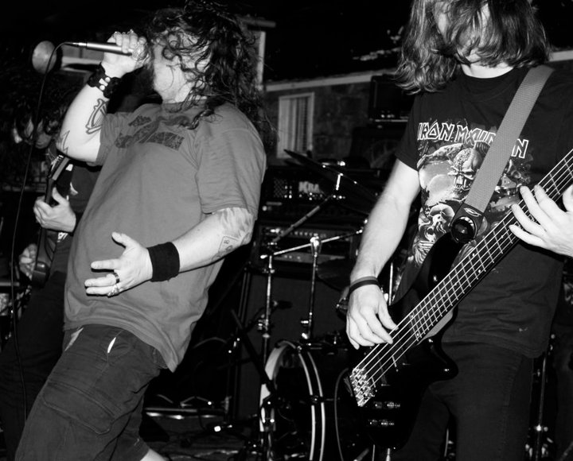
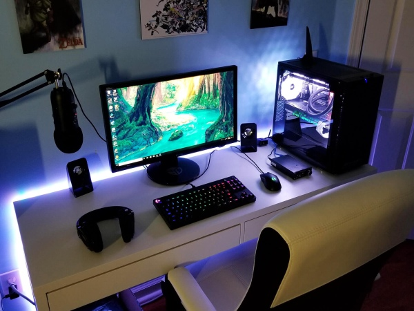
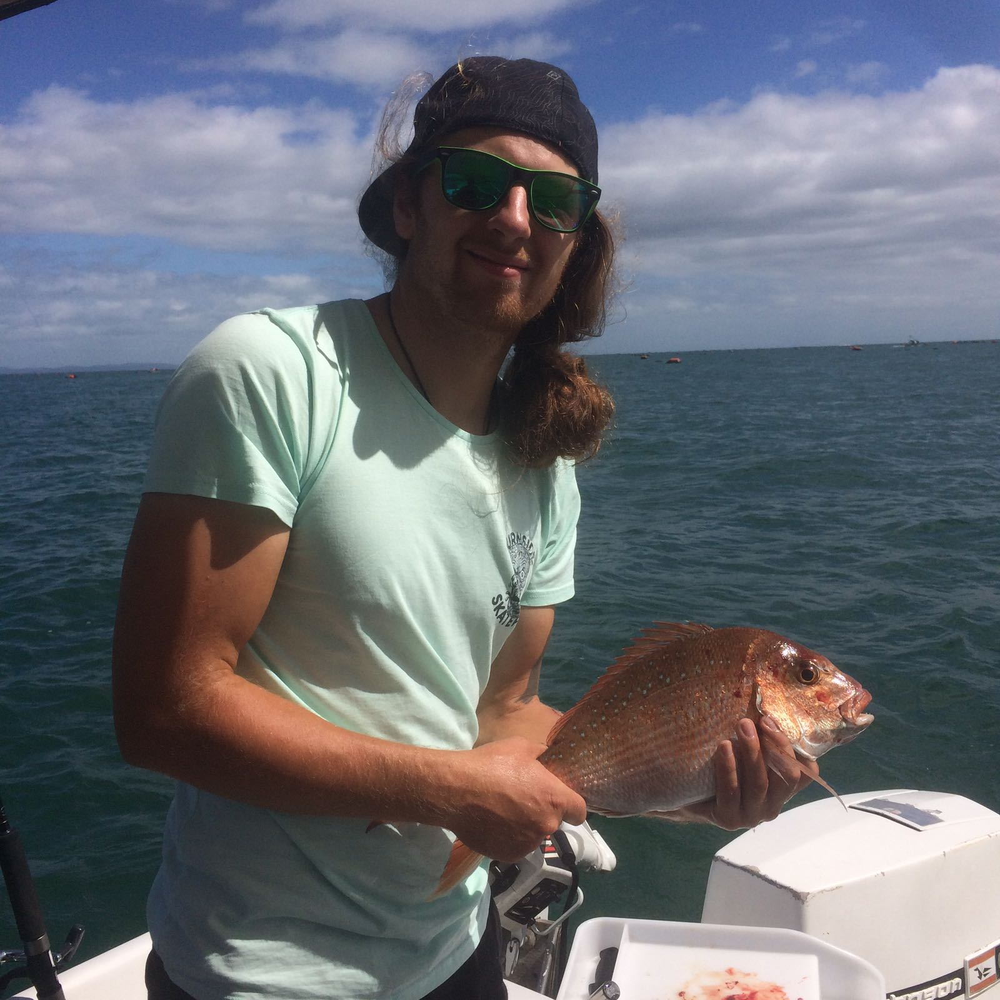
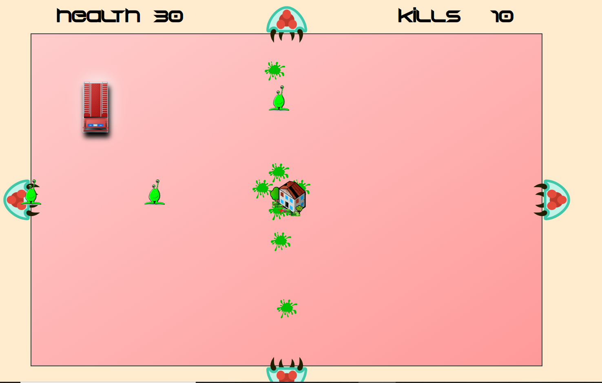
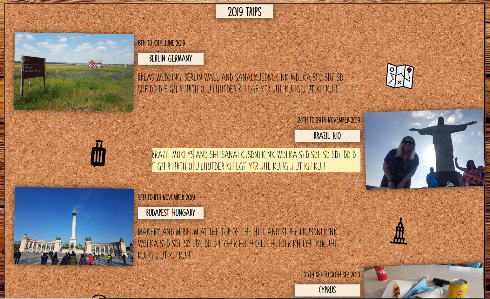
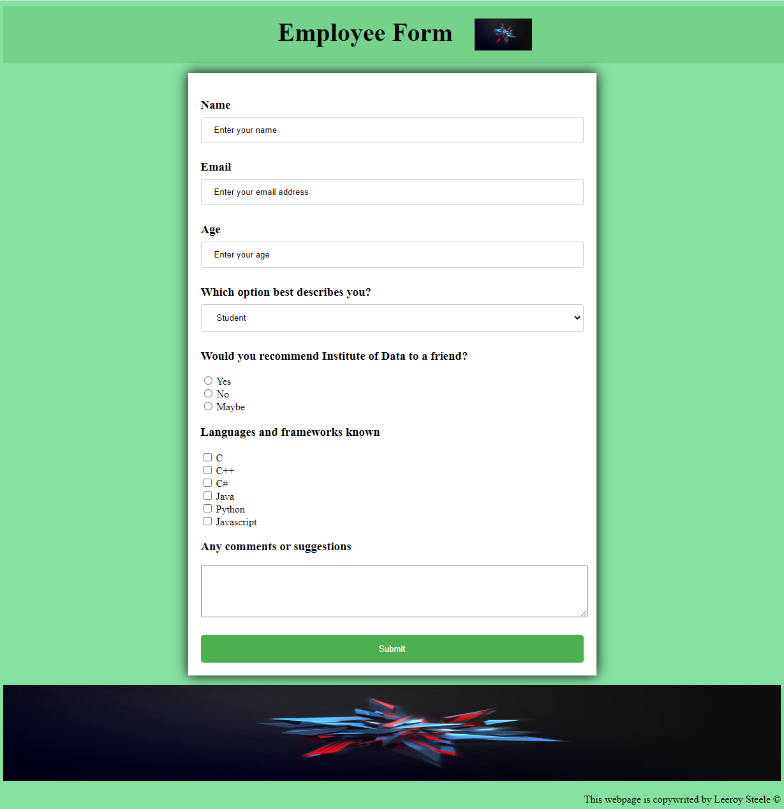
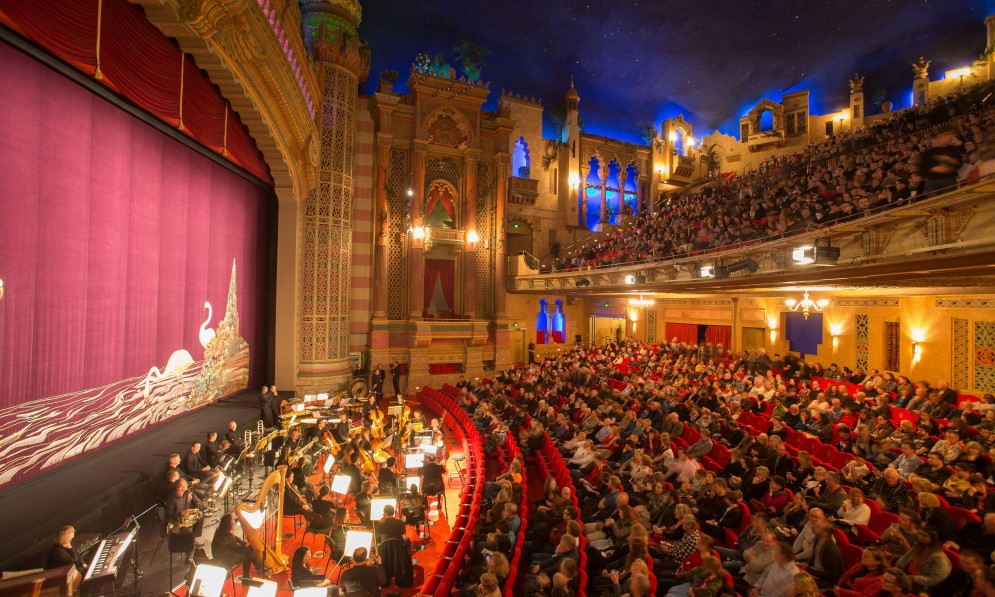
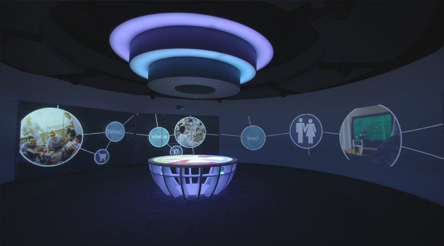

Bio
Hi there!
I'm Lee, I just moved back to Auckland from spending the last 10 years in London . In my spare time I love to play my guitar, snowboarding, play computer games, fishing and socializing with friends and family
I am currently working as an Audio Visual Technician for Auckland Live but i would love to start a new career as a web developer. I have been coding foir fun since 2020 and I have started a 3 month coding bootcamp with AUT/ Institute of Data in october 2022
Personal Hobbies
Travel
I love to travel and see the world with my wife Kylie. We based ourselves in London between 2013 - 2022 and we travelled in this time to over 40 countries
Music
I spend a lot of time at home playing my electric guitar and bass. I have played in a few bands in Auckland / London and nothing beats the thrill of playing music live (If people actually show up to our gigs!)
Gaming
I have been playing PC games since I was very young. My earliest memory gaming was playing "Alex the Kid" on Sega Mastersystem. My love of gaming has tought me a lot about how to build and configuer PC's
Fishing
I love going out fishing on my boat. usually my wife catches larger fish than me which she loves to remind people from time to time :)
My Coding Experience
Browser Game
Browser based top down game (Squish the alien) This was a personal project I worked on in 2020 to teach myself HTML, CSS and lots of Javascript!)
Photo Album
Browser photo album to showcase my travel photography. This was a personal project I worked on in 2020 to teach myself HTML, CSS and basic Javascript)
Online form
Online form i created during the IOD bootcamp. This was to build confidence in creating HTML forms and validation)
Online calculator

Online calculator i created during the IOD bootcamp. This was to build confidence in javascript functions)
Work history
Auckland Live
2022 -> Today
JB Communications
2014 -> 2022
I worked at
Staging Connections
2010 -> 2013
I worked at Staging connections for 2010 - 2013. My position was "Event Technician" and my responsibilities included setting up large corporate event technology such as PA systems, large format projection, lighting systems. I worked my way up to becoming a senior technician in this role. I left this role to move to London
Vidcom
2007 -> 2010
I worked at vidcom from 2007 - 2010. This was my first job in the Corporate AV insustry ans I was hired as a AV technicain. My role included setting up various Audio Visual system, usually for conferences and usually limited to basic PA systems, Projectors and lighting
NZ Army
2006 -> 2007
I joined the NZ Army in 2006 as a Automotive Technician. I made it through basic training, branch training and half way through my apprentiship but I left due to not loving the my trade